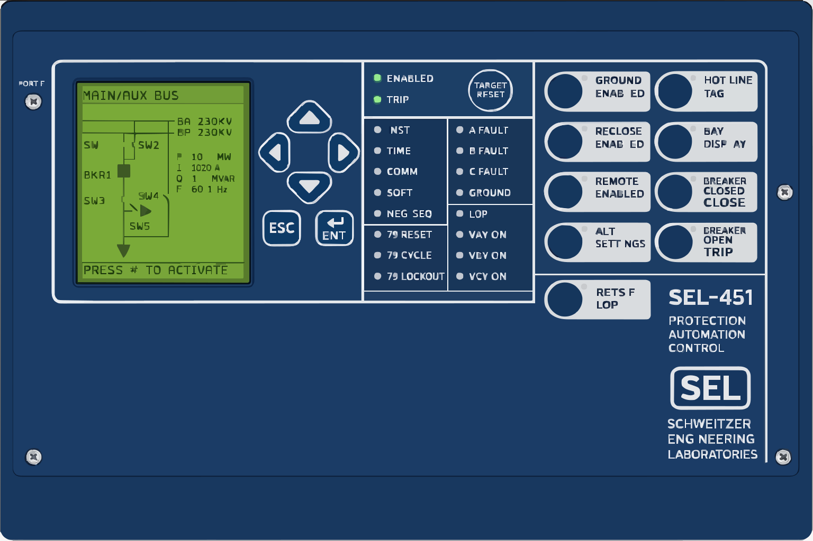

Skip to content
Loading relay data…
← Back to Dashboard

—
Loading relay information…
⏱ Sync Time
Substation
Bay
Power System Equipment
Breaker
IP Address
Password
acc: default
2ac: default
📥 Download Setting File
📤 Upload Setting File
🔒 Change Password
⏱ Synch Time to PC
⚡ Trigger
📋 Sequence of Events (SER)
Total Records:
0
|
Last updated:
—
|
🟡 Connecting…
📥 Export CSV
🔄 Refresh
⏹ QUIT
IP Address
WebSocket Port
Poll Rate
ms
Connect
Connecting to live data source
Waiting for the WebSocket server to accept the connection.
📊 Relay Word — Target Status
Rows Loaded:
0
/ 78
|
🟡 Idle
📥 Export CSV
🔄 Fetch All TAR
⏹ Stop
IP Address
WebSocket Port
Fetching TAR data…
🔌 Inputs / Outputs
I/O Rows:
0
|
🟡 Idle
📥 Export CSV
🔄 Fetch I/O
⏹ Stop
IP Address
WebSocket Port
Scanning TAR rows for I/O…
Show:
All I/O
Inputs Only
Outputs Only
Settings
COMTRADE Files
Event Report
Inputs / Outputs
Relay Word
SER